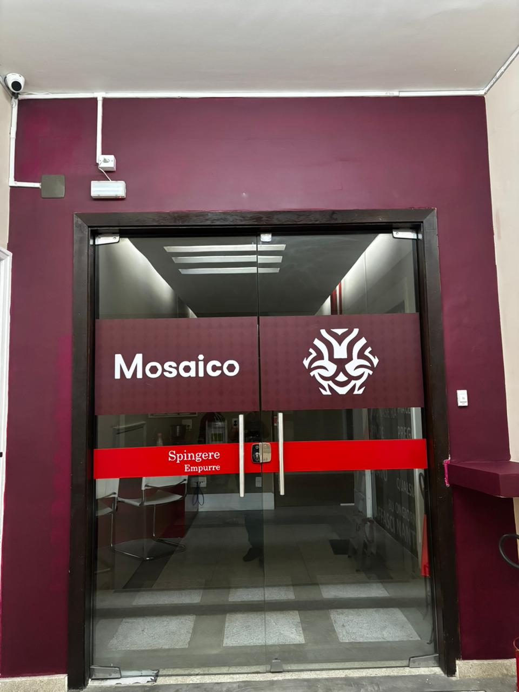

Espaço para Cursos • Cozinha • Criação de Conteúdo
Como usar o espaço
Cursos presenciais
Workshops práticos
Experiências gastronômicas
Gravação de conteúdos
Eventos educacionais
Encontros profissionais
Salas


Sobre o espaço
A Mosaico é um espaço criado para transformar conhecimento em experiências reais.
Localizada em Copacabana, oferecemos estrutura profissional para cursos presenciais, workshops, produção de conteúdo e experiências gastronômicas.
Mais do que salas, a Mosaico é um ambiente preparado para quem ensina, cria e compartilha conhecimento.
Localização
Nossa Senhora de Copacabana 690, cobertura – Copacabana – Rio de Janeiro

Contato
Para maiores informações, entre em contato